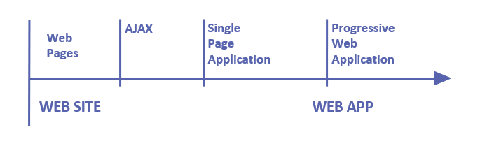
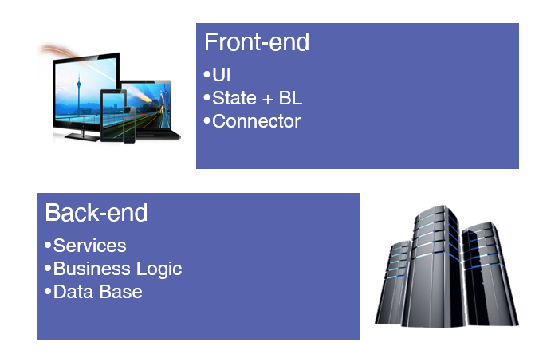

The GeneXus Angular Generator uses the open-source web application framework Angular to help you build modern applications for the web.
Angular (together with React and Vue.js) is a front-end framework that constitutes a solution for developing modern, fast, and highly performant web applications.
Web apps have evolved from web pages (where pages were submitted) to Ajax technology, SPA (Single Page Applications), and to current Progressive Web Applications.
GeneXus is evolving to support the latest features of Web apps by introducing the Angular Generator.

Angular applications are a "one-page application;" that is, when the state is changed, the page is not reloaded. Instead, the Document Object Model (DOM) is modified to alter its content. Angular implements this by using a DOM virtual scheme and a state change detector, so that when the application state is altered, only the DOM is modified to the minimum necessary to reflect the change.
The solution has a traditional three-tier architecture with a server-side (i.e., Back-end) where the services, business logic, and connection to the database are performed. On the client-side (i.e., Front-end), we have the UI presentation, and all the necessary components to keep the session state and connect to the server-side.
The Front-end is generated using Angular (Node.js), and the Back-end can be generated using Java, .Net or .Net Core generators.

The Front-end does the following:
The code generated by the Angular Generator is HTML and TypeScript. See Angular Generator Overview for more information.